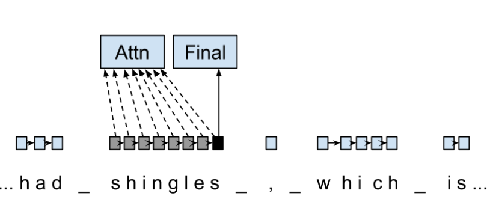
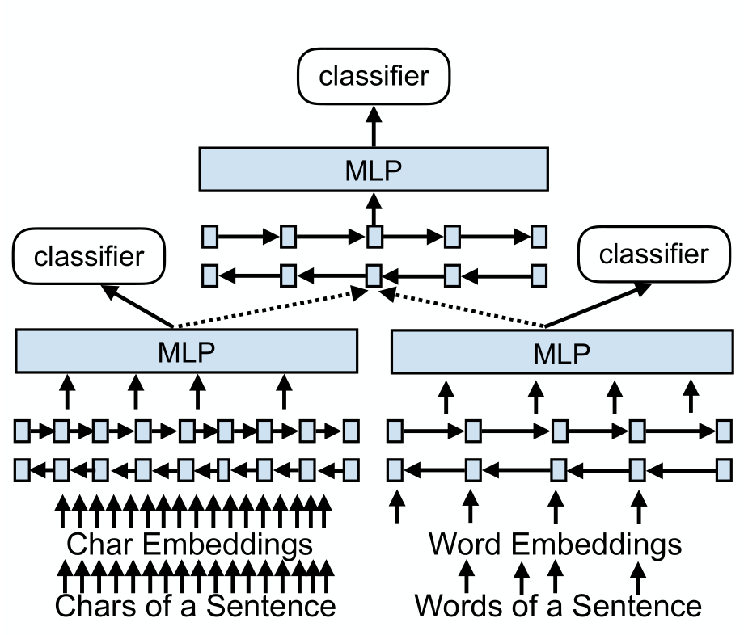

Blog Source File
Prashant Tak
Created: 2021-04-05 Mon 19:08
1 TODO
- Fix Time
- Add Sections
- Link to RSS feed
- Add dark mode toggle
Look into whether latex can be used and generated properly for displaying notesImprove mathjax performance- Create Tufte Theme for hugo that ACTUALLY works based on tufte css and the current tale theme
Replace with material scroll bar- Open external links in new tab by default, unless it’s meta-links.
- Improve Image filter sigh
2 Doubts
- What is r?
- dev-corpus refers to?
- F1 score? Measure of accuracy
- xpos?
3 About
Hi! I’m Prashant.
4 Blog
4.1 Morphosyntactic Tagging with a Meta-BiLSTM Model - An Overview
(Subtitle: I had shingles, which is a painful disease.)

This post contains a complete overview of the titled paper and provides a basic outline of related concepts. This paper aims to investigate to what extent having initial sub-word and word context insensitive representations affect performance.
4.1.1 Abstract
- RNN leads to advances in speech tagging accuracy Zeman et al
- Common thing among models, rich initial word encodings.
- Encodings are composed of recurrent character-based representation with learned and pre-trained word embeddings1.
- Problem with the encodings, context restriced to a single word hence only via subsequent recurrent layers the word information is processed.
- The paper deals with models that use RNN with sentence-level context.
- This provides results via synchronized training with a meta-model that learns to combine their states.
- Results are provided on part-of-speech and morphological tagging2 with great performance on a number of languages.
4.1.2 Terms
- Morphosyntactic = Morphology + Syntax and Morphology is study of words, how they are formed, and their relationship to other words in the same language.
- RNN: On difficulty of training RNNs
- LSTM: Long Short-Term Memory is a type of RNN that addresses the vanishing gradient problem through additional cells, input and output gates.
- BiLSTM: It is a sequence processing model that consists of two LSTMs. They effectively increase the amount of information available to the network, improving the context available to the algorithm (e.g. knowing what words immediately follow and precede a word in a sentence).
4.1.3 Basics of NLP / Pre-requisites
- Key Terms
- NLP: Natural Language Processing concerns itself with interaction of technology with human languages.
- Tokenization: An early step in the NLP process which splits longer strings of text into smaller pieces, or tokens.
- Normalization: A series of tasks meant to put all text on a level playing field i.e. converting it to lowercase, removing punctuation, expanding contractions, converting numbers to their word equivalents, stripping white space, removing stop words and so on.
- Stemming: Process of eliminating affixes (suffixes, prefixes, infixes, circumfixes) from a word to obtain its stem. For example, running becomes run.
- Lemmatization: It’s related to stemming but is able to capture canonical forms based on the word’s lemma (root form). For example, better would turn into good.
- Corpus: The latin word for body refers to a collection of texts which may be formed of a single language of texts, or multiple. They are generally used for statistical linguistic analysis and hypothesis testing.
- Stop words: Filter words which contribute little to the overall meaning of text since they are the very common words of the language. For example: the, a etc.
- Parts-of-speech (POS) Tagging: It consists of assigning a category tag to the tokenized parts of a sentence such as nouns, verbs, adjectives etc. The category of words is distinguished since they share similar grammatical properties.
- Statistical Language Modeling: It’s the process of building a model which takes words as input and assign probabilities to the various sequences that can be formed using them.
- Bag of words: It’s a representation model used to simplify the contents of a selection of text by just reducing the words to their frequency.
- n-gram: It focuses on preserving contagious sequences of N items from the text selection.
- A framework for NLP
- Data Collection or Assembly: Building the corpus
- Data Preprocessing: Perform operations on the collected corpus which consists of tokenization, normalization, substitution (noise removal).
- Data Exploration & Visualization: Includes visualizing word counts and distributions, generating wordclouds, performing distance measures.
- Model Building: Choosing the language models (FSM, MM), classifiers and sequence models (RNNs, LSTMs).
- Model Evaluation
- Data Representation
- We need to encode text in a way that can be controlled by us using a statistical classifier.
- We go from a set of categorical features in text: words, letters, POS tags, word arrangement, order etc to a series of vectors.
- One-hot Encoding (Sparse Vectors) :
- Each word, or token corresponds to a vector element.
- Result of one-hot encoding is a sparse matrix, that is, for a corpus containing a lot of tokens, representing a small subset of them would lead to a lot of zero vectors which would consume a large amount of memory.
- One more drawback is that while it contains the information regarding the presence of a certain word, it lacks positional information so making sense of the tokens is not an option. For example, Kate hates Alex is the same as Alex hates Kate.
- Variants of one-hot encoding are bag-of-words, n-gram and TF-IDF representations.
- Dense Embedding Vectors:
- The information of the semantic relationship between tokens can be conveyed using manual or learned POS tagging that determines which tokens in a text perform what type of function. (noun, verb, adverb, etc)
- This is useful for named entity recognition, i.e. our search is restricted to just the nouns.
- But if one represents features3 as dense vectors i.e. with core features embedded into an embedding space of size d dimensions, we can compress the number of dimensions used to represent a large corpus into a manageable amount.
- Here, each feature no longer has its own dimension but is rather mapped to a vector.
- Word Representation
- Subword models
- Purely Character-level models: In character-level modes, word embeddings4 can be composed of character embeddings which have several advantages. Character-level models are needed because:
- Languages like Chinese don’t have word segmentations.
- For languages that do have, they segment in different ways.
- To handle large, open, informal vocabulary.
- Character level model can generate embeddings for unknown words.
- Similar spellings share similar embeddings
- Subword-models: TBD???
- Purely Character-level models: In character-level modes, word embeddings4 can be composed of character embeddings which have several advantages. Character-level models are needed because:
4.1.4 Introduction
Morphosyntactic tagging accuracy has improved due to using BiLSTMs to create sentence-level context sensitive encodings5 of words which is done by creating an initial context insensitive word representation6 having three parts:
- A dynamically trained word embedding
- A fixed pre-trained word-embedding, induced from a large corpus
- A sub-word character model, which is the final state of a RNN model that ingests one character at a time.
In such a model, sub-word character-based representations only interact via subsequent recurrent layers. To elaborate, context insensitive representations would normalize words that shouldn’t be, but due to the subsequent BiLSTM layer, this would be overridden. This behaviour differs from traditional linear models.7
This paper aims to investigate to what extent having initial subword and word context insensitive representations affect performance. It proposes a hybrid model based on three models- context sensitive initial character and word models and a meta-BiLSTM model which are all trained synchronously.
On testing this system on 2017 CoNLL data sets, largest gains were found for morphologically rich languages, such as in the Slavic family group. It was also benchmarked on English PTB(?) data, where it performed extremely well compared to the previous best system.
4.1.5 Related Work
- An excellent example of an accurate linear model that uses both word and sub-word features.7 It uses context sensitive n-gram affix features.
- First Modern NN for tagging which initially used only word embeddings8, was later extended to include suffix embeddings.9
- TBD TBD
- This is the jumping point for current architectures for tagging models with RNNs.6
- Then 5 showed that subword/word combination representation leads to state-of-the-art morphosyntactic tagging accuracy.
4.1.6 Models
- Sentence-based Character Model
In this model, a BiLSTM is applied to all characters of a sentence to induce fully context sensitive initial word encodings. It uses sentences split into UTF8 characters as input, the spaces between the tokens are included and each character is mapped to a dynamically learned embedding. A forward LSTM reads the characters from left to right and a backward LSTM reads sentences from right to left.

Figure 1: Sentence-based Character Model: The representation for the token shingles is the concatenation of the four shaded boxes.
For an n-character sentence, for each character embedding \((e_{1}^{char},...,e_{n}^{char})\), a BiLSTM is applied: \[ f_{c,i}^{0},b_{c,i}^{0} = BiLSTM(r_{0},(e_{1}^{char},...,e_{n}^{char}))_{i} \] For multiple layers(l) that feed into each other through the concatenation of previous layer encodings, the last layer has both forward \((f_{c,l}^{l},...,f_{c,n}^{l})\) and backward \((b_{c,l}^{l},...,b_{c,n}^{l})\) output vectors for each character.
To create word encodings, relevant subsets of these context sensitive character encodings are combined which can then be used in a model that assigns morphosyntactic tags to each word directly or via subsequent layers. To accomplish this, the model concatenates upto four character output vectors: the {forward, backward} output of the {first, last} character in the token T = \((F_{1st}(w), F_{last}(w), B_{1st}(w), B_{last}(w))\) which are represented by the four shaded box in Fig. 1.
Thus, the proposed model concatenates all four of these and passes it as input to an multilayer perceptron (MLP): \[ g_{i} = concat(T) \] \[ m_{i}^{chars} = MLP(g_{i}) \] A tag can then be predicted with a linear classifier that takes as input \(m_{i}^{chars}\), applies a softmax function and chooses for each word the tag with highest probability.
- Word-based Character Model
To investigate whether a sentence sensitive character model (Fig.1) is better than a model where the context is restricted to the characters of a word, (Fig.2) which uses the final state of a unidirectional LSTM, combined with the attention mechanism of (ADD REF: cao rei) over all characters.

Figure 2: Word-based Character Model: The token is represented by concatenation of attention over the lightly shaded boxes with the final cell (dark box).

Figure 3: BiLSTM variant of Character-level word representation
- Sentence-based Word Model
The inputs are the words of the sentence and for each of the words, we use pre-trained word embeddings \((p_{1}^{word},...,p_{n}^{word})\) summed with a dynamically learned word embedding for each word in the corpus \((e_{1}^{word},...,e_{n}^{word})\): \[ in_{i}^{word} = e_{i}^{word}+p_{i}^{word} \] The summed embeddings \(in_{i}\) are passed as input to one or more BiLSTM layers whose output \(f_{w,i}^{l}, b_{w,i}^{l}\) is concatenated and used as the final encoding, which is then passed to an MLP: \[ o_{i}^{word} = concat(f_{w,i}^{l}, b_{w,i}^{l}) \] \[ m_{i}^{word} = MLP(o_{i}^{word}) \] The output of this BiLSTM is essentially the Word-based Character Model before tag prediction, with the exception that the word-based character encodings are excluded.

Figure 4: Tagging Architecture of Word-based Character Model and Sentence-based Word Model
- Meta-BiLSTM: Model Combination
If each of the character or word-based encodings are trained with their own loss and are combined using an additional meta-BiLSTM model, optimal performance is obtained. The meta-biLSTM model concatenates the output of context sensitive character and word-based encoding for each word and puts this through another BiLSTM to create an additional combined context sensitive encoding. This is followed by a final MLP whose output is passed to a linear layer for tag prediction. \[ cw_{i} = concat(m_{i}^{char}, m_{i}^{word}) \] \[ f_{m,i}^{l}, b_{m,i}^{l} = BiLSTM(r_{0},(cw_{0},...,cw_{n}))_{i} \] \[ m_{i}^{comb} = MLP(concat(f_{m,i}^{l}, b_{m,i}^{l})) \]

Figure 5: Tagging Architecture of Meta-BiLSTM. Data flows along the arrows and the optimizers minimize the loss of the classifiers independently and backpropogate along the bold arrows.
- Training Schema
Loss of each model is minimized independently by separate optimizers with their own hyperparameters which makes this a multi-task learning model and hence a schedule must be defined in which individual models are updated. In the proposed algorithm, during each epoch, each of the models are updated in sequence using the entire training data.

In terms of model selection, after each epoch, the algorithm evaluates the tagging accuracy of the development set and keeps the parameters of the best model. Accuracy is measured using the meta-BiLSTM tagging layer, which requires a forward pass through all three models. Only the meta-BiLSTM layer is used for model selection and test-time prediction.
The training is synchronous as the meta-BiLSTM model is trained in tandem with the two encoding models, and not after they have converged. When the meta-BiLSTM was allowed to back-propagate through the whole network, performance degraded regardless of the number of loss functions used. Each language could in theory used separate hyperparameters but identical settings for each language works well for large corpora.
4.1.7 Experiments and Results
- Experimental Setup
The word embeddings are initialized with zero values and the pre-trained embeddings are not updated during training. The dropout10 used on the embeddings is achieved by a single dropout mask and dropout is used on the input and the states of the LSTM.
Model Parameter Value C,W BiLSTM Layers 3 M BiLSTM Layers 1 CWM BiLSTM size 400 CWM Dropout LSTM 0.33 CWM Dropout MLP 0.33 W Dropout Embeddings 0.33 C Dropout Embedding 0.5 CWM Nonlinear Activation Fn (MLP) ELU TODO Add two remaining tables
- Data Sets
- POS Tagging Results
- POS Tagging on WSJ
- Morphological Tagging Results
4.1.8 Ablation Study (Takeaways)
- Impact of the training schema: Separate optimization better than Joint optimization
- Impact of the Sentence-based Character Model: Higher accuracy than word-based character context
- Impact of the Meta-BiLSTM Model Combination: Combined model has significantly higher accuracy than individual models
- Concatenation Strategies for the Context-Sensitive Character Encodings: Model bases a token encoding on both forward and backward character representations of both first and last character in token. (Fig. 1) ….
- Sensitivity to Hyperparameter Search: With larger network sizes, capacity of the network increases, but it becomes prone to overfitting. Future variants of this model might benefit from higer regularization.
- Discussion: TODO Proposed modifications
4.1.9 Conclusions
4.1.10 Readings and Resources
- Pytorch: Beginner Guide, Detailed Guides, Notebook form
- Math: Matrix Calculus, Book
- Basics:
- Interactive Tutorials on Weight Initialization, Different Optimizers
- Rougier’s Bits
- NLP: Best Practices, DL Techniques for NLP
- BiLSTM: Improving POS tagging
- Implementation of the paper
4.2 Creating a blog using ox-hugo, org mode and github pages
I was going to make a post explaining how I made this blog but it was rendered pretty useless by this. So yeah, I might archive this later.
- Install hugo from your package manager.
Create a new site:
hugo new site blog
Add a theme:
cd blog git init git submodule add <theme_url> themes/<name>
Install ox-hugo in emacs
;; goes in packages.el (package! ox-hugo) ;; goes in config.el (use-package ox-hugo :after ox)
- TODO Explain the process of content and properties, tags etc.
- Export
- Config.toml (theme, title, url, publishdir, etc)
- Run server, check localhost.
- Push
- Go to GitHub repository Settings > GitHub pages. Select /docs in Source.
- Voila!
5 Readings
6 Resources
7 Notes
7.1 Microprocessors and Interfacing
7.1.1 Programmer’s Model 8086
7.2 Differential Geometry
7.2.1 First Fundamental Form and Local Intrinsic Properties of a Surface
- Introduction
- The surfaces are defined similar to curves by an equation of the type F(x,y,z) = 0 or parametrically by expressing x,y,z in terms of two parameters u,v varying over a domain.
- After defining the surface locally, its points are classified as ordinary or singular.
- Then using tangent plane at a point and the surface normal at it, a coordinate system \((r_1, r_2, N)\) at every point of the surface is introduced.
- After that, a certain quadratic differential form known as first fundamental form on a surface and direction coefficients are introduced.
- Definition of a Surface
Definition 1: Locus of a point P(x,y,z) in \(E_{3}\) satisfying some restrictions on x,y,z which is expressed by a relation of the type F(x,y,z) = 0.
This equation is called the implicit or the constraint equation of the surface which allows for a global study of the surface.
Definition 2: For parameters u, v taking real values and varying over a domain D, a surface is defined parametrically as \[ x = f(u,v), y = g(u,v), z = h(u,v) \] where f, g and h are single valued continuous functions possessing continuous derivatives of r-th order. Such surfaces are called surfaces of class r.
Parametric representation is useful for local study of surfaces i.e. in the neighbourhood of a point which is a small region but it is not unique for a surface. Also, the parameters u and v are called curvilinear coordinates.
Definition 3: For two parametric representations u, v and u’, v’ of the same surface, any transformation of the form \(u'=\phi(u,v)\) and \(v'=\psi(u,v)\) relating the two representations is called a parametric transformation.
Definition 4: A parametric transformation is proper if:
- φ and ψ are single valued functions.
- The Jacobian \(\frac{\delta (\phi,\psi)}{\delta (u,v)}\neq0\) in some domain D.
These conditions are necessary and sufficient for existence of inverse in the neighbourhood of any point in D’ which is the domain of u’, v’ corresponding to the domain D of the u, v plane.
- Nature of Points on a Surface
Notation: For r being the position vector of a point on the surface, r = (x,y,z), we can take r = r(u,v) as the parametric form of the surface and use \(r_1 = \frac{\delta r}{\delta u} = (x_{1},y_{1},z_{1})\) and \(r_2 = \frac{\delta r}{\delta v} = (x_{2},y_{2},z_{2})\), similarly we can denote second order derivatives using \(r_{11}, r_{21}\) etc.
Definition 1: If \(r_{1}\times r_{2}\neq0\) at a point on a surface, then the point is called an ordinary point. A point which is not an ordinary point is called a singularity.
Remarks:
- Considering M = \(\begin{bmatrix} x_{1} & y_{1} & z_{1}\\ x_{2} & y_{2} & z_{2}\end{bmatrix}\) For \(r_{1} \times r_{2} \neq 0\) at an ordinary point, i.e. rank of M is two at that point.
- If the rank of M is either zero or one, the point on the surface is a singular point.
- If \(r_{1} \times r_{2}\neq0\) or equivalently rank of M is two, then x,y,z uniquely determine the parameters u,v in the neighbourhood of an ordinary point.
- When only one determinant minor of M is zero, one cannot conclude that the point is a singular point.
- A proper parametric transformation transforms an ordinary point into an ordinary point.
- Due to geometrical nature of the surface, some singularities continue to be singularities, regardless of the parametric representations, these are called essential singularities.
- There are other singularities depending on the choice of parametric representation which are called artificial singularities.
Example: Consider the circular cone represented by x = u sinα cosv, y = u sinα sinv, z = u cosα where α is the semivertical angle of cone with O as origin and OP = u, where P is any point on the cone. Computing M, then at u = 0, the determinant of every second order minor is zero, hence it is an essential singularity.
Example: Taking any point 0 as origin in the plane, x = u cosv, y = u sinv, z = 0, we get \(r_{1} \times r_{2} = u\textbf{k}\). Hence it is zero only when u = 0 i.e. it is an artificial singularity since it arises due to the choice of the parametric coordinates and not due to the nature of the surface.
- Representation of a Surface
For our study of surfaces, we consider only ordinary points. And we consider the entire surface as a collection of parts, each part being given a particular parametrisation and the adjacent parts being related by a proper parametric transformation.
Definition 1: A representation R of a surface S of class r in \(E_{3}\) is a collection of points in \(E_{3}\) covered by a system of overlapping parts \({S_{j}}\) where each part \(S_{j}\) is given by a parametric equation of class r. Each point lying in the common portion of two parts \(S_{i}, S_{j}\) is such that the change of parameters from one part to is adjacent is given by a proper parametric transformation of class r.